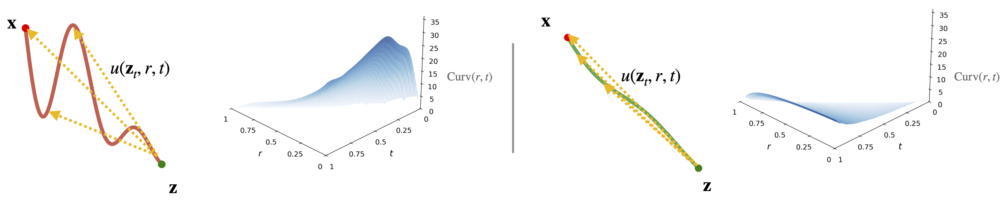
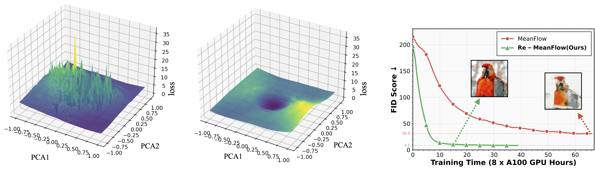

Meanflow offers a promising framework for one-step generative modeling by directly learning a mean-velocity field, bypassing expensive numerical integration.
The challenge, however, lies in the geometry of the trajectory itself. Under the standard independent data-noise coupling, these trajectories are highly curved.
We argue that this curvature is a key bottleneck for efficient mean-velocity modeling:
intuitively, learning the mean velocity on a straight trajectory is much easier than learning it on a curved one.
Motivated by this observation, we propose Re-MeanFlow, which learns the mean-velocity field on rectified, straighter trajectories.
By addressing the curvature bottleneck, Re-MeanFlow enables substantially more efficient mean-velocity modeling.
Flow Trajectory
Trajectory Curvature
StraightCurved
Trajectory Curvature
Re-MeanFlow
MeanFlow learns the mean-velocity field under the standard independent coupling \(p(\mathbf{x},\mathbf{z}) = p(\mathbf{x})\,p(\mathbf{z})\),
whose induced generative trajectories are known to be highly curved. Re-MeanFlow instead trains on a rectified coupling,
where each noise sample \(\mathbf{z}\) is paired with a data sample \(\mathbf{x}\) obtained by solving the transport process with a pretrained flow model,
analogous to the reflow procedure in Rectified Flow. This rectified pairing produces substantially straighter trajectories, making the mean-velocity field much easier to learn.
MeanFlow on Curved TrajectoryRe-MeanFlow on Rectified Trajectory

Curvature surfaces \(\mathrm{Curv}(r,t)\) are computed from real generative trajectories on ImageNet, with
\(\mathrm{Curv}(r,t)=\mathbb{E}_{\mathbf{z}_t\sim p_t}\!\Big[\angle\!\big(u(\mathbf{z}_t,r,t),\,v(\mathbf{z}_t,t)\big)\Big]\).
Smoother Landscape, Faster Convergence
Straighter trajectories make mean-velocity learning dramatically easier.
With the same initialization, Re-MeanFlow converges substantially faster than MeanFlow.
Visualizing the loss landscape along two PCA directions reveals why: MeanFlow exhibits a rugged, sharply peaked landscape, whereas Re-MeanFlow is markedly smoother and better conditioned,
making optimization significantly easier.
MeanFlow Loss LandscapeRe-MeanFlow Loss LandscapeConvergence Speed (FID vs GPU Hours)

Results
Compared to prior state-of-the-art flow-based one-step methods,
Re-MeanFlow achieves the best FID across all settings,
outperforming both one-step distillation and training-from-scratch methods
on class-conditional ImageNet generation.
ImageNet 64×64
Method
NFE
FID
Diffusion models
EDM2-S
63 × 2
1.58
+ Autoguidance
63 × 2
1.01
EDM2-XL
63 × 2
1.33
Few-step models
2-rectified flow++
1
4.31
iCT
1
4.02
ECD-S
1
3.30
sCD-S
1
2.97
TCM
1
2.88
AYF
1
2.98
Re-MeanFlow (ours)
1
2.87
ImageNet 256×256
Method
NFE
FID
Diffusion models
ADM
250 × 2
10.94
DiT-XL
250 × 2
2.27
SiT-XL
250 × 2
2.06
SiT-XL + REPA
250 × 2
1.42
Few-step models
iCT
1
34.6
SM
1
10.6
iSM
1
5.27
iMM
1 × 2
7.77
MeanFlow
1
3.43
Re-MeanFlow (ours)
1
3.41
ImageNet 512×512
Method
NFE
FID
Diffusion models
EDM2-S
63 × 2
2.23
+ Autoguidance
63 × 2
1.34
EDM2-XXL
63 × 2
1.81
Few-step models
ECT
1
9.98
ECD
1
8.47
CMT
1
3.38
sCT-S
1
10.13
sCD-S
1
3.07
AYF
1
3.32
Re-MeanFlow (ours)
1
3.03
One-step generation (NFE=1) on ImageNet at 64×64 (left), 256×256 (middle), and 512×512 (right).
BibTeX
@misc{zhang2026overcomingcurvaturebottleneckmeanflow,
title={Overcoming the Curvature Bottleneck in MeanFlow},
author={Xinxi Zhang and Shiwei Tan and Quang Nguyen and Quan Dao and Ligong Han and Xiaoxiao He and Tunyu Zhang and Chengzhi Mao and Dimitris Metaxas and Vladimir Pavlovic},
year={2026},
eprint={2511.23342},
archivePrefix={arXiv},
primaryClass={cs.CV},
url={https://arxiv.org/abs/2511.23342},
}